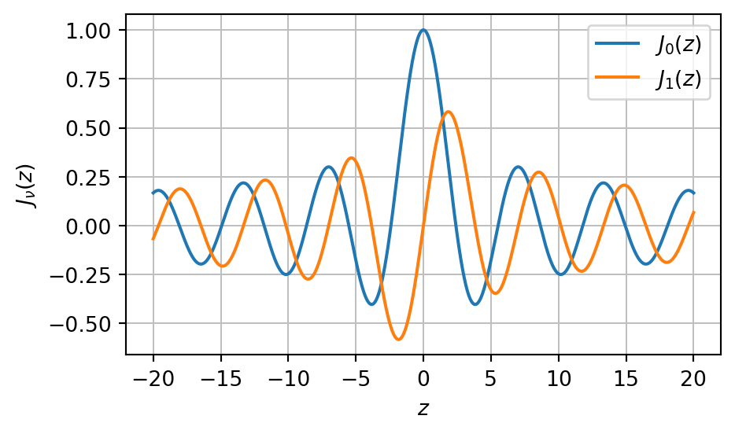

from sympy import symbols, exp, Abs, diff, simplify, factor, solve, pi, I
lam1, gamma_plus, gamma_minus, alpha, beta = symbols("lambda_1, gamma^+, gamma^-, alpha, beta")
h = symbols("h", real=True, positive=True)
z = symbols("z", real=True)
lam = symbols("lambda", real=True, nonnegative=True);9 Dipole sources above a halfspace
9.1 Uniform halfspace
First, we recall that we have derived frequency domain full-space solutions of the Helmholtz equation for the fields \(\mathbf E\) and \(\mathbf H\) which base on the definition of a vector potential \(\mathbf F\).
Now, we introduce the plane \(z=0\) where a jump (discontinuity) in the electrical conductivity from zero to some positive, constant and finite value occurs.
We set \[ \sigma(z) = \begin{cases} 0 & z < 0 \\ \sigma_1 > 0 & z \ge 0. \end{cases} \]
Later, we associate the upper halfspace (where \(z<0\)) with the electrically insulating Air, and the lower halfspace (where \(z>0\)) with the electrically conducting Earth, which we refer to as the conductive halfspace.
We place the dipole at a height of \(h>0\) above the Air-Earth interface. Hence, the \(z\)-coordinate of the dipole is \(z=-h\).
Due to the symmetry of the problem we prefer a cylindrical coordinate system \((r, z, \varphi)\). The axis of the dipole is aligned with the \(z\)-axis (hence the term vertical magnetic dipole, VMD).
Note
The restriction to a vertical magnetic dipole was made intentionally in order to describe the principles of the mathematical approach. It does not restrict the generality.
It is known from the analysis of the fullspace solution that, in the case of a VMD, there is no dependency of the angular direction \(\varphi\) around the \(z\)-axis.
In a cylindrical coordinate system, the fields of a \(z\)-axis aligned VMD only depend on \(r\) and \(z\).
9.1.1 Source field
The dipole has a dipole moment of \(\mathbf m = (0, 0, m)^\top\) and is located at the point \(\mathbf r_0 = (0, 0, -h)^\top\).
For \(h\) being sufficiently large, the conducting halfspace has only negligible induction effects in the upper halfspace, therefore we could approximate the vector potential at a point \(\mathbf r\) in the neighborhood of the dipole as \(`math F_z^* = \frac{i\omega\mu_0 m}{4 \pi R},\)` where \(R = |\mathbf r - \mathbf r_0| = \sqrt{r^2 + (z + h)^2}\) is the Euclidean distance between the dipole and the point of observation.
9.1.2 Superposition of source field and induced field within the halfspace
The vector potential (and thus the electric and magnetic field) in \(z<0\) is a superposition of two separate, but not independent contributions, i.e., \[ F^0_\text{total} = F^* + F^0 \quad \text{ in } z < 0, \]
Within the conducting halfspace \(z>0\) the vector potential is referred to as \(F^1\).
Note
Note that we have still left out the consideration of the potential in the plane \(z=0\)!
Both \(F^0\) and \(F^1\) depend on the dipole position.
9.1.3 Helmholtz equation
For any arbitrary dipole position \(\mathbf r_0 = (0, 0, -h)^\top\), \(h>0\), we observe a unique distribution of fields in both halfspaces.
We formulate the problem of finding these fields as a system of two independent PDEs for the two halfspaces (excluding the common interface at \(z=0\)). Such a system can only be solved uniquely when certain conditions at \(z=0\) are enforced.
In other words: The freedom of choice of the solutions in both halfspaces must be restricted by the conditions of continuity at \(z=0\).
We formulate the following task:
We seek the vector potentials \(F^0(r, z)\) und \(F^1(r, z)\) as solution of the system \[ \begin{align} \laplacian F^0 + k_0^2 F^0 & = -i\omega\mu_0 m \delta^3(\mathbf r_0) & \text{ for } z < 0 \\ \laplacian F^1 + k_1^2 F^1 & = 0 & \text{ for } z > 0 \end{align} \] with appropriate conditions in \(z=0\).
\(k_0^2\) and \(k_1^2\) are the (squared) wave numbers, where \(k_i^2 = -i\omega\mu_0\sigma_i\), \(i=0,1\). The first of the above equations (for \(F^0\)) is a Poisson equation, since \(k_0^2 \approx 0\).
9.1.4 Conditions of continuity
When propagating through the interface \(z=0\), the tangential field components \(E_\varphi\) and \(H_r\) are continuous.
However, we are using the vector potential in our derivation. What is the appropriate condition for the vector potential in \(z=0\)?
Therefore, in cylindrical coordinates, the fields in \(z=0\) must fulfill the equations \[ \begin{align} E_\varphi^0 & = E_\varphi^1 \\ H_r^0 & = H_r^1, \end{align} \] which translate into the appropriate conditions for the vector potentials in \(z=0\): \[ \begin{align} \pdv{F^0}{r} & = \pdv{F^1}{r} \\ \pdv{F^0}{r}{z} & = \pdv{F^1}{r}{z} . \end{align} \] These conditions apply along the complete plane \(z=0\). \(F^0\) and \(F^1\) must vanish for \(r \to \infty\). Therefore the constants of integration must be zero. After integration we obtain \[ \begin{align} F^0 & = F^1 \\ \pdv{F^0}{z} & = \pdv{F^1}{z} \end{align} \] as conditions of continuity for the vector potential in \(z=0\).
9.1.5 Separation of variables
At first, we seek a solution of the homogeneous PDE in \(z>0\) (medium \(1\), i.e., within the conducting halfspace). In cylindrical coordinates, the Helmholtz equation can be written as \[ \begin{equation} \pdv[2]{F}{r} + \frac{1}{r} \pdv{F}{r} + \pdv[2]{F}{z} + k^2 F = 0. \end{equation} \]
A common solution method is the Separation of variables.
We make the following ansatz
\[ \begin{equation} F(r,z) = U(r) V(z) \end{equation} \] and replace \(F\) by \(U V\) in the PDE.
After multiplication with \(\dfrac{1}{UV}\) we rewrite \[ \begin{equation} \underbrace{ \frac{1}{U} \dv[2]{U}{r}+ \frac{1}{Ur} \dv{U}{r} }_{=-\lambda^2} + \underbrace{ k^2 + \frac{1}{V} \dv[2]{V}{z}}_{=+\lambda^2} = 0, \end{equation} \] from which we obtain the two independent ODEs \[ \begin{equation} \begin{split} \dv[2]{U}{r} + \frac{1}{r} \dv{U}{r} + \lambda^2 U & = 0 \\ \dv[2]{V}{z} - (\lambda^2 - k^2) V & = 0, \end{split} \end{equation} \] which we refer to as Bessel and d’Alembert equations, resp.
Their solutions are \[ \begin{equation} U(r, \lambda) = \hat\alpha(\lambda) J_0(\lambda r) + \hat\beta(\lambda) Y_0(\lambda r) \end{equation} \] and \[ \begin{equation} V(z, \lambda) = \hat\gamma^-(\lambda) e^{-\sqrt{\lambda^2 - k^2}z} + \hat\gamma^+(\lambda) e^{+\sqrt{\lambda^2 - k^2}z}. \end{equation} \]
The general solution can be obtained by linear combination, i.e., \[ F(r, z) = \int\limits_0^\infty U(r, \lambda) V(z, \lambda) \dd\lambda \]
9.1.6 Potential in \(z>0\) (conducting halfspace)
With \(\lambda_1 = \sqrt{\lambda^2 - k_1^2}\) and \(\gamma^\pm = \hat\alpha \hat \gamma^\pm\) the superposition of solutions for all values of \(\lambda\) yields the solution for \(z>0\) \[ \begin{equation} F^1(r,z) = \frac{i\omega\mu m}{4 \pi} \int_0^\infty \left[ \gamma^-(\lambda) e^{-\lambda_1 z} + \gamma^+(\lambda) e^{+\lambda_1 z} \right] J_0(\lambda r)\, \dd\lambda. \end{equation} \] It is required that \(F^1 \to 0\) for \(z \to +\infty\). This can be achieved by setting \(\gamma^+ = 0\).
We obtain the important intermediate result \[ \begin{equation} F^1(r,z) = \frac{i\omega\mu m}{4 \pi} \int_0^\infty \gamma^-(\lambda) e^{-\lambda_1 z} J_0(\lambda r)\, \dd\lambda. \end{equation} \] Now, it remains to determine the unknown coefficient function \(\gamma^-(\lambda)\).
9.1.7 Potential in \(z<0\) (insulating halfspace)
As has been indicated above, the total potential in the insulating halfspace can be written as the superposition of the two contributions \(F^0\) and \(F^*\).
In \(z<0\), we add the potential observed in the unbounded non-conducting fullspace, \(F^*\), and the potential of the induced currents in \(z>0\): \[ F^0(r,z) = \frac{i\omega\mu m}{4 \pi} \left[ \frac{1}{R} + \int_0^\infty \gamma^+(\lambda) e^{+\sqrt{\lambda^2 - k_0^2}z}J_0(\lambda r)\,\dd\lambda \right] \] Again, it is required that \(F^0 \to 0\) for \(z \to -\infty\) which is met by setting \(\gamma^-(\lambda) = 0\) in \(z<0\).
To make both terms in brackets compatible, we use the Sommerfeld integral \[ \frac{1}{R} = \int_0^\infty e^{-\lambda |z+h|} J_0(\lambda r)\, \dd\lambda. \] Assuming \(k_0^2 = 0\), we write \[ F^0(r, z) = \frac{i\omega\mu m}{4 \pi} \int_0^\infty \left[ e^{-\lambda|z+h|} + \gamma^+(\lambda) e^{+\lambda z} \right] J_0(\lambda r)\,\dd\lambda \]
9.1.8 Exploiting the continuity conditions in \(z=0\)
At this point, we need the conditions of continuity to match both solutions in \(z=0\).
It is required, that the potential and its vertical (i.e., normal with respect to the plane \(z=0\)) derivative are both continuous globally, i.e., in the complete plane \(z=0\) (for all \(r\)). The latter condition must also be fulfilled for all values of \(\lambda\).
We have now two conditions and are able to derive the two coefficient functions \(\gamma^-\) and \(\gamma^+\).
We can restrict the determination of the coefficient functions to those terms that only depend on \(z\), i.e., we drop the Bessel function and the integral.
It remains to solve the equations \[ V^0(z) = e^{-\lambda|z+h|} + \gamma^+(\lambda) e^{+\lambda z} \] and \[ V^1(z) = \gamma^-(\lambda) e^{-\lambda_1 z}. \] for \(\gamma^-(\lambda)\) and \(\gamma^+(\lambda)\).
9.1.9 Implementation
For the determination of the coefficient functions we use SymPy.
9.1.9.1 Determination of the coefficient functions
Here we employ the conditions of continuity to match the solutions obtained separately for the two adjacent regions.
Recall that with the separation of variables ansatz introduced above, the function \(V(z, \lambda)\) (beside \(U(r, \lambda)\)) was one of the two individual functions that composed \(F(r,z)\).
The conditions of continuity in \(z=0\) have to be enforced for any value of \(r\).
Hence, only \(V(z, \lambda)\) is affected.
We define two symbolic functions for both \(V^0(z, \lambda)\) and \(V^1(z, \lambda)\). To ensure that differential operators can be applied, we let these functions depend explicitly on \(z\):
V0 = lambda z: exp(-lam * Abs(z + h)) + gamma_plus * exp(lam * z)
V1 = lambda z: gamma_minus * exp(-lam1 * z)V0(z)\(\displaystyle \gamma^{+} e^{\lambda z} + e^{- \lambda \left|{h + z}\right|}\)
V1(z)\(\displaystyle \gamma^{-} e^{- \lambda_{1} z}\)
Here we define two symbolic functions that evaluate the derivative of the potentials \(V\) w.r.t. \(z\):
dV0 = lambda z: diff(V0(z), z)
dV1 = lambda z: diff(V1(z), z)Next, we substitute \(z\) with \(0\) in the results of the differentiation:
dV0(z).subs(z, 0)\(\displaystyle \gamma^{+} \lambda - \lambda e^{- h \lambda}\)
dV1(z).subs(z, 0.0)\(\displaystyle - \gamma^{-} \lambda_{1}\)
ex1 = V0(z) - V1(z)
ex2 = dV0(z) - dV1(z)
sols = solve([ex1.subs(z, 0), ex2.subs(z, 0)], [gamma_plus, gamma_minus])
gm = sols[gamma_minus]
gp = sols[gamma_plus]gm.simplify()\(\displaystyle \frac{2 \lambda e^{- h \lambda}}{\lambda + \lambda_{1}}\)
gp.simplify()\(\displaystyle \frac{\left(\lambda - \lambda_{1}\right) e^{- h \lambda}}{\lambda + \lambda_{1}}\)
V_0 = lambda z: V0(z).subs(gamma_plus, gp)
V_0(z)\(\displaystyle \left(\frac{\lambda}{\lambda e^{h \lambda} + \lambda_{1} e^{h \lambda}} - \frac{\lambda_{1}}{\lambda e^{h \lambda} + \lambda_{1} e^{h \lambda}}\right) e^{\lambda z} + e^{- \lambda \left|{h + z}\right|}\)
V_1 = lambda z: V1(z).subs(gamma_minus, gm).factor().simplify()
V_1(z)\(\displaystyle \frac{2 \lambda e^{- h \lambda - \lambda_{1} z}}{\lambda + \lambda_{1}}\)
We summarize:
Summary
The vector potential \(F^0\) in \(z\le0\) is \[ F^0(r, z) = \frac{i \omega \mu m}{4 \pi} \int_0^\infty \left( e^{-\lambda |z+h|} + \frac{\lambda - \lambda_1}{\lambda + \lambda_1} e^{-\lambda h} e^{\lambda z} \right) J_0(\lambda r)\, \dd\lambda, \] and \(F^1\) in \(z\ge 0\) is \[ F^1(r, z) = \frac{i \omega \mu m}{4 \pi} \int_0^\infty \frac{2 \lambda}{\lambda + \lambda_1} e^{-\lambda h} e^{-\lambda_1 z} J_0(\lambda r)\, \dd\lambda. \]
9.1.10 Bessel functions
Bessel functions typically occur as fundamental solutions of PDEs in cylindrical coordinate systems.
For the calculation of the electric and magnetic fields, we need to apply derivatives w.r.t. the coordinates \(r\) and \(z\).
- the operator \(\pdv{}{r}\) only affects the Bessel function \(J_0(\lambda r)\)
- the operator \(\pdv{}{z}\) only affects the exponential function, i.e., \(e^{-\lambda_1 z}\)
Recall
We make use of the ansatz \[ \begin{align} \vb{E} & = -\curl \vb{F} \\ \vb{H} & = (i \omega \mu_0)^{-1} (\grad \divergence \vb{F} + k^2 \vb{F}) \end{align} \] with differential operators appropriate for cylindrical coordinates.
In particular, we need to evaluate the following derivatives: \[ \begin{align} E_\varphi & = \pdv{F}{r} \\ H_r & = \beta \, \pdv{F}{r}{z} \\ H_z & = -\beta \frac{1}{r}\pdv{}{r}(r \pdv{F}{r}) \end{align} \] with \(\beta = (i\omega \mu_0)^{-1}\).
Note
Note that in cylindrical coordinates the radial part of the Laplace operator reads \[ \frac{ 1 }{ r} \pdv{}{r}(r \pdv{F}{r}) \] For a homogeneous Helmholtz equation it turns out that \[ \pdv[2]{F}{z} + k^2 F = -\frac{ 1 }{ r} \pdv{}{r}(r \pdv{F}{r}). \]
We will use sympy again to provide the Bessel functions of zeroth and first order as symbolic expressions.
First, let’s inspect the graphs of of \(J_0(x)\) and \(J_1(x)\). It appears from visual inspection, that \(J_1(x)\) is related to the negative derivative of \(J_0(x)\).
from sympy import besselj
from spb import *
r = symbols("r", positive=True, real=True)
J0 = lambda r: besselj(0, r)
J1 = lambda r: besselj(1, r)
p = graphics(
line(J0(z), (z, -20, 20), title='J0(x)'),
line(J1(z), (z, -20, 20), title='J1(x)'),
size=(5,3), ylabel=r'$J_\nu(z)$', use_latex=True
)
Are we able to handle the derivatives of the Bessel function using sympy?
We note that \[
\dv{J_0(\lambda r)}{r} = -\lambda J_1(\lambda r).
\] sympy provides
dJ0dr = lambda v: diff(J0(v), r)
dJ0dr(lam * r)\(\displaystyle - \lambda J_{1}\left(\lambda r\right)\)
as expected.
On the other hand, we know from Abramowitz & Stegun that \[
\dv{J_1(\lambda r)}{r} = \lambda J_0(\lambda r) - \frac{ J_1(\lambda r) }{ r },
\] while sympy gets
diff(J1(lam * r), r)\(\displaystyle \lambda \left(\frac{J_{0}\left(\lambda r\right)}{2} - \frac{J_{2}\left(\lambda r\right)}{2}\right)\)
We can however correct the output by use of the simplify method:
dJ1dr = lambda v: diff(J1(v), r).simplify()
dJ1dr(lam * r)\(\displaystyle \lambda J_{0}\left(\lambda r\right) - \frac{J_{1}\left(\lambda r\right)}{r}\)
9.1.11 Expressions for the fields in \(z \ge 0\)
In the following we derive the proper expressions for the integrands necessary for the evaluation of the fields.
Note that the actual integration, i.e., carrying out \(\int_0^\infty \dots \dd\lambda\), remains untouched.
To compute the integrands, we introduce the symbolic variables for \(\omega\), \(\mu_0\), and \(m\).
Integrand for \(E_\varphi\)
We evaluate the derivative according to \[
E_\varphi = \pdv{F}{r}
\] and obtain the integrand for later evaluation of \(E_\varphi\) (for which we introduce the abbreviation Ephi_ in sympy)
omega, mu0, m = symbols("omega mu_0 m")
Ephi_ = symbols("E_phi")
Ephi_ = alpha * V_1(z) * dJ0dr(lam * r)
print('Ephi_ = ')
Ephi_.subs(alpha, I * omega * mu0 * m / ( 4 * pi))Ephi_ = \(\displaystyle - \frac{i \lambda^{2} m \mu_{0} \omega e^{- h \lambda - \lambda_{1} z} J_{1}\left(\lambda r\right)}{2 \pi \left(\lambda + \lambda_{1}\right)}\)
which we rearrange as \[ -\frac{i \omega \mu_0 m}{2 \pi} \frac{\lambda^2 }{\lambda + \lambda_1} e^{-\lambda h} e^{-\lambda_1 z} J_1(\lambda r). \]
Later we integrate this expression along the positive \(\lambda\)-axis \(0 \le \lambda < +\infty\).
Integrand for \(H_r\)
We need to calculate the derivative similar to \[ H_r = \beta \pdv{E_\varphi}{z} \]
We obtain
Hr_ = diff(Ephi_, z) * beta
Hr_.subs(alpha, I * omega * mu0 * m / ( 4 * pi)).subs(beta, 1 / (I * omega * mu0)).simplify()\(\displaystyle \frac{\lambda^{2} \lambda_{1} m e^{- h \lambda - \lambda_{1} z} J_{1}\left(\lambda r\right)}{2 \pi \left(\lambda + \lambda_{1}\right)}\)
Integrand for \(H_z\)
We calculate the following expression to obtain the integrand for the evaluation of \(H_z\) which will be carried out later: \[ H_z = -\beta \frac{1}{r}\pdv{}{r}(r \pdv{F}{r}). \]
Hz_ = (-beta * diff(Ephi_ * r, r).simplify() / r).subs(alpha, I * omega * mu0 * m / ( 4 * pi)).subs(beta, 1 / (I * omega * mu0)).simplify()
Hz_\(\displaystyle \frac{\lambda^{3} m e^{- h \lambda - \lambda_{1} z} J_{0}\left(\lambda r\right)}{2 \pi \left(\lambda + \lambda_{1}\right)}\)
With the calculations completed above, we have provided all integrands for the evaluation of the fields in \(z \ge 0\).